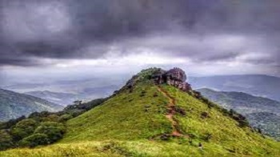
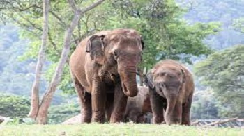

Bekal Fort
It was an important military station for Tipu Sultan when he led a military expedition to capture Malabar. The coins and artefacts found in archaeological excavations at Bekal fort indicate the strong presence of Mysore Sultans. Tipu Sultan's death during the Fourth Anglo-Mysore War ended Mysorean control in 1799.

Ranipuram
The gentle hills of Ranipuram in Kerala are famous for its trekking trail. Situated at the height of about 750 meters above sea level, this destination has thick forest vegetation and lush green grasslands. The whole place is proposed inside the Ranipuram Wildlife Sanctuary which merges with Talakaveri Wildlife Sanctuary of Karnataka.
